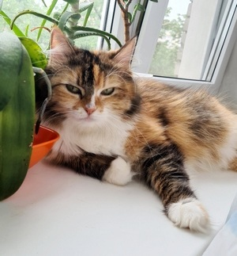
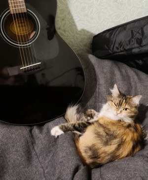

Кошка по кличке Цири
Цири - самая красивая и умная кошка в мире. Возраст — почти 6 лет.
Фотографироваться не очень любит.

Характер Цири
Тип характера — Охотник.
Охотники — прирожденные мастера преследования и ловли добычи.Основные характеристики: развитый навык охоты, наличие особого оружия: острые когти и клыки, навык терпеливого наблюдателя, очень мягкие ступни с кожаными подушечками для бесшумного передвижения, шикарные вибриссы.
Кошка норовистая, своенравная. В нашей семье есть шуточное предположение, что её предком был
камышовый кот.
Самая подходящая профессия для Цири — это КОШКА-МЫШЕЛОВ.
- "Бог сотворил кошку для того, чтобы у человека был тигр, которого можно погладить."
- Виктор Гюго
ТОП-мест, где можно найти Цири?
- На подоконнике с собственным оазисом
- В бескаркасном кресле
- На диване
- Возле батареи
- В шкафу
Времяпровождение Цири
ИГРЫ
- Атака на мышку
- Погоня за ленточкой
- Охота за ногами под одеялом
Для всех игр применяется правило:
- "Кусь — хорошо, а два лучше!"
- © Цири
В свободное от игр и базовых потребностей время, любимые занятие Цири — это сон и прослушивание хорошей
музыки
(любит спать под группу Rammstein).

У Цири есть человек-хозяин
Контакты человека-хозяина:380739008252